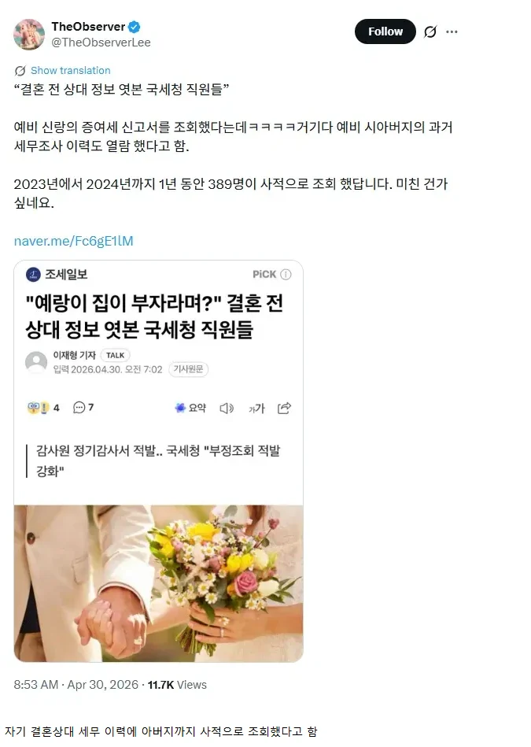

사적으로 무한 스캔 돌린 국세청 ㄷㄷㄷ
댓글
+경찰
솔직히 유혹은 존나 심할 거 같긴한데
저거 분명 심하면 파면까지 갈 문제고 좆된 선례도 많아서 OJT에서도 하지말라고 다 할텐데 저걸ㅋㅋㅋ
2000년 초에 폰팔이도 전여친 폰번호 조회해서 염탐하고 그랬는데
폰팔이랑 똑같네 ㅋㅋㅋ
예전에도 동방신기 사생팬들이 주민센터나 은행에서 일하는 경우에 주민번호 주소 재산 다 조회해서 이미 안다고 들었었음
지금이라고 안그럴까
어디든 다 저럴걸
병원에 연예인 오면 소문 싹 퍼져서 전병동에서 기록 뒤져보거든? 그러고 몇일 지나면 총무과에서 열람했던 사람 싹 잡아서 경위서 쓰게 만듦. 븅신들 ㅋ
탈탈 털면 결국 피해자랑 결혼했다면 피해자가 또 피해를 보겠네.
그래서 체납내역 열람화면열면 팝업으로 경고뜸
지금은 저런거 사적으로 이용하면 감사때 영혼털림
옛날에는 많앗겟지
26년 4월 기사인데 아직도 저런단 소리 아님?
아직도 저런다는거임
동사무소부터 중앙부처 공무원까지 무단조회하지 말라고 사유 입력하게 돼 있는데 이거 가라로 쳐 입력하고 조회함. 실질적으로 걸리는 건 같은 부서 동료가 앙심품고 찌르는 거 or 무단조회한 정보로 고소했다가 걸린 케이스
그중에 악질은 건보 직원들이고, 이건 잊었다 하면 주기적으로 걸려서 형사고발까지 당하는데도 질투심에 사로잡혀 연예인 악성루머/악플달고싶다는 생각에 밥그릇 깨는 미친년들 두자릿수로 나옴. 여기가 온갖 여성 유명인들 낙태썰 성형썰의 진원지라 보면 됨
잘라
국세청, 건강보험공단, 연금공단 다 싹 탈탈 털어봐라 ㅋㅋ
다똑같다